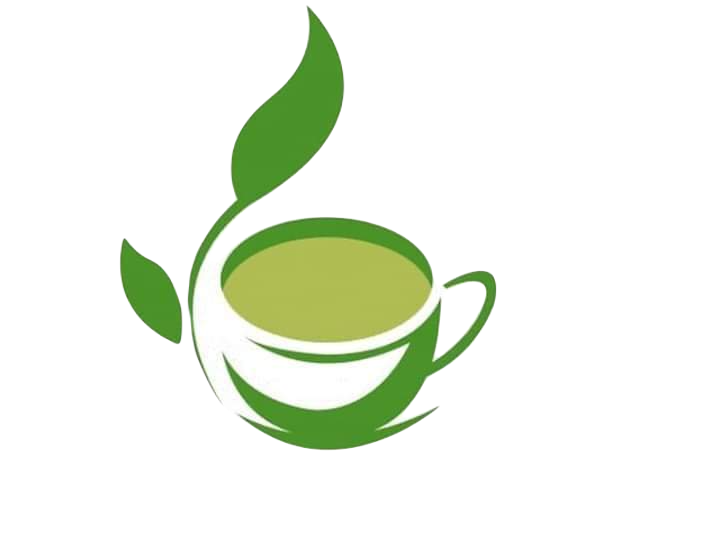

Sobre a ideia:A Plantinhas Naturais é um espaço digital criado em 2022, através de uma atividade prática, por Carolina Morais e Laura Santos, com o objetivo de informar sobre as principais plantas medicinais, assim como seus benefícios. |
 |
Um pouco mais sobre os desenvolvedores: |
Acompanhe mais aquiDesde o começo, Carolina nunca pensou em ser desenvolvedora de sistemas, há 2 anos atrás, estava fazendo Enem e pensando em entrar na faculdade de Direito. Com o tempo as coisas mudaram, e ela resolveu seguir na área de Agronomia, porém, ainda ocorreram alguns imprevistos. Hoje, Carolina segue na área de desenvolvimento e vem sempre buscando juntar os dois mundos.Com a Laura foi um pouco diferente, essa sim sempre gostou deste maravilhoso universo tecnológico. Antes de conhecer esta área, estudou logística, e acabou descobrindo a programação por acaso, durante uma aula de matemática. Desde então, nunca mais abandonou este ramo. |
|
|